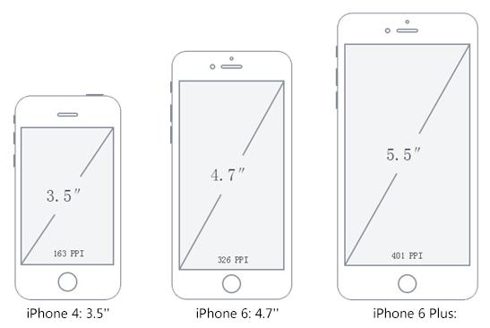
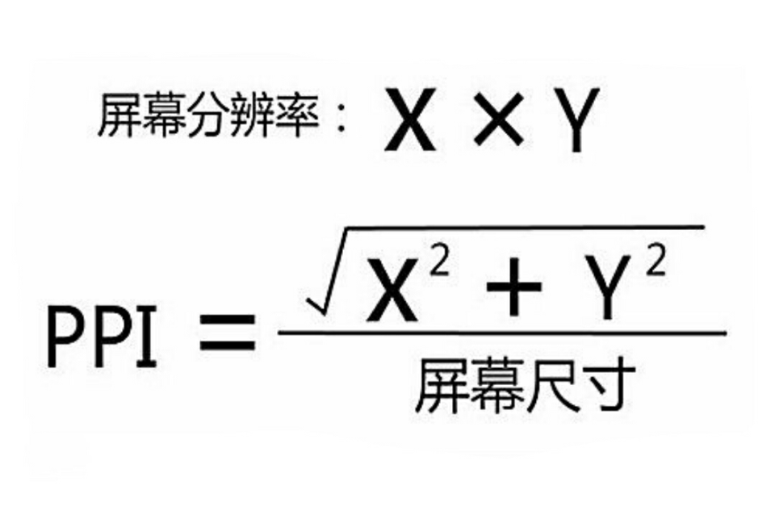
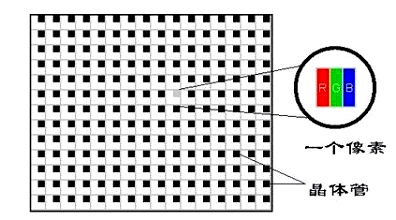
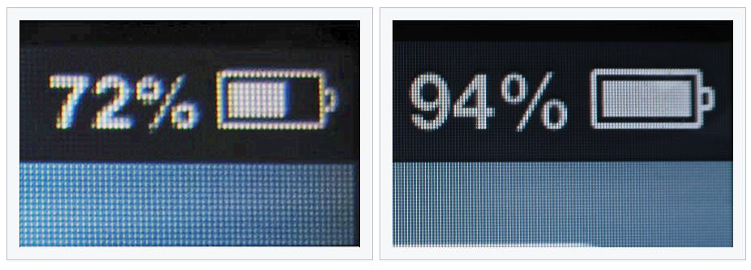
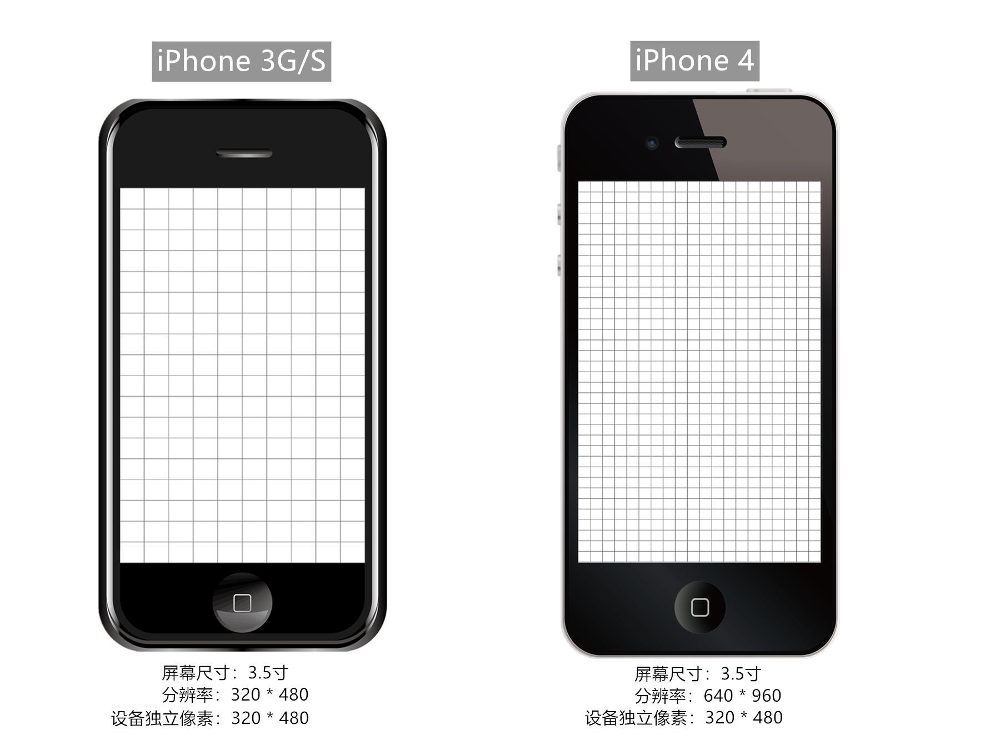
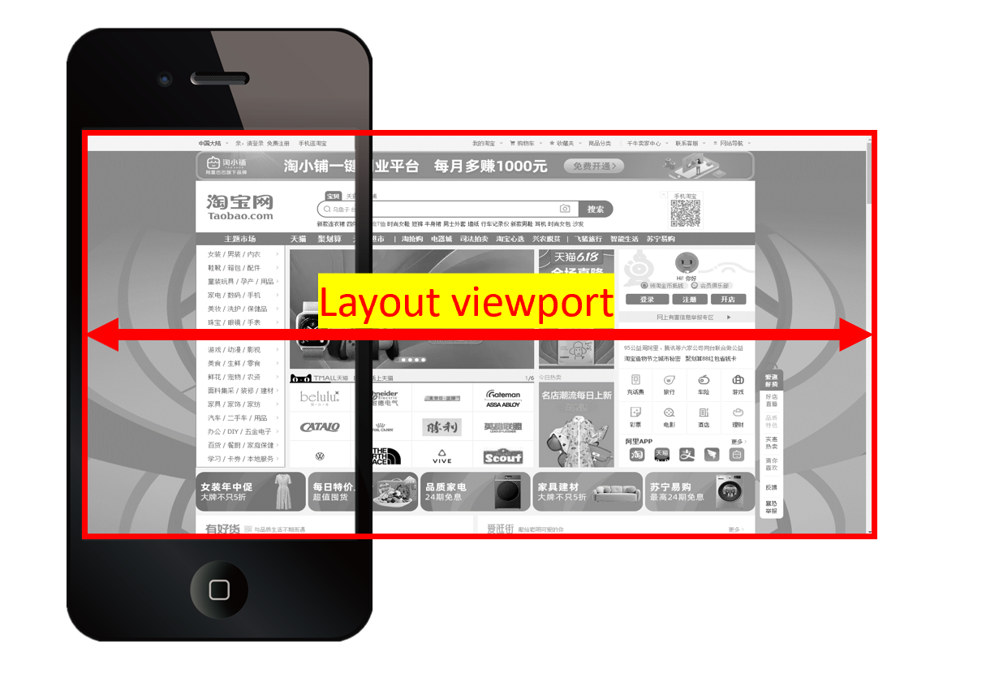

一、相关概念
在学习移动端之前，我们先来学习一些基础的概念和专有名词，这些知识会在以后的面试、工作沟通中经常用到。
屏幕相关
1.屏幕大小
指屏幕的对角线长度，单位是英寸(inch)。常见尺寸有： 3.5寸、4.7寸、5.0寸、5.5寸、6.0寸等。
备注：1英寸(inch) = 2.54厘米(cm)

2.屏幕分辨率
指屏幕在：横向、纵向上所拥有的物理像素点总数。一般表示用 n * m 表示。
例如： iPhone 6 的屏幕分辨率为 750 * 1334
注意点:
- 屏幕分辨率是一个固定值，屏幕生产出来就确定了，无法修改！！
- 屏幕分辨率、显示分辨率是两个概念，系统设置中可以修改的是：显示分辨率。
- 显示分辨率是设备当前所用到的物理像素点数，也可以说：屏幕分辨率 >= 显示分辨率。
常见手机分辨率
| 型号 | 分辨率（物理像素点总和） |
|---|---|
| IPhone 3G / 3GS | 320 * 480 |
| IPhone 4 / 4s | 640 * 960 |
| IPhone 5 / 5s | 640 * 1136 |
| IPhone 6 / 7 / 8 | 750 * 1334 |
| IPhone 6p / 7p / 8p | 1242 x 2208 |
| IPhone X | 1125 * 2436 |
| 华为 P30 | 1080 * 2340 |
3.屏幕密度
又称：屏幕像素密度，是指屏幕上每英寸里包含的物理像素点个数，单位是 ppi （pixels per inch），其实这里还有另一个单位 dpi（dots per inch），两个值的计算方式都一样，只是使用的场景不同。 ppi主要用来衡量屏幕，dpi 用来衡量打印机等。
像素相关
1.物理像素
又称：设备像素，物理像素是一个长度单位，单位是px，1个物理像素就是屏幕上的一个物理成像点，就是屏幕中一个微小的发光物理元器件（可简单理解为超级微小的灯泡），是屏幕能显示的最小粒度。它由屏幕制造商决定，屏幕生产后无法修改。例如 iPhone 6 的横向上拥有的物理像素为750、纵向上拥有的物理像素为1334 ，我们也可以用：750* 1334表示。
物理像素图示：
2. css 像素
又称： 逻辑像素，css像素是一个抽象的长度单位，单位也是px，它是为 Web 开发者创造的，用来精确的度量Web 页面上的内容大小。我们在编写css、js、less中所使用的都是css像素（可以理解为：“程序员像素”）；
思考：我代码中所写的1px（css像素），到了屏幕上到底对应几个物理像素呢？是1个css像素就对应1个物理像素(“发光的灯泡”)吗？要探讨这个对应关系，就要学习接下来的新概念：设备独立像素。
3.设备独立像素
设备独立像素简称 DIP 或 DP（device-independent pixel），又称：屏幕密度无关像素。
引言： 在没出现【高清屏】的年代，1个css像素对应1个物理像素，但自从【高清屏】问世，二者就不再是1对1的关系了。苹果公司在2010年推出了一种新的显示标准：在屏幕尺寸不变的前提下，把更多的物理像素点压缩至一块屏幕里，这样分辨率就会更高，显示效果就会更佳细腻。苹果将这种屏幕称为：Retina 屏幕（又名：视网膜屏幕），与此同时推出了配备这种屏幕的划时代数码产品——iPhone4。
我们来看一个场景：
程序员写了：width = 2px，height = 2px 的盒子，若1个css像素直接对应1个物理像素，由于iPhone3G/S 与iPhone4屏幕尺寸相同，但iPhone4的屏幕能容纳下更多的物理像素点，所以iPhone4的物理像素点比iPhone3G/S小很多，那么理论上这个盒子在iPhone4屏幕上也就会比iPhone3G/S屏幕上小很多，而事实是iPhone3G/S 和 iPhone4下这个盒子是一样大的！！！，只不过 iPhone4更加细腻、清晰。如何做到的呢？这就要靠设备独立像素。
对比：iPhone3G/S 与 iPhone4的成像效果：
 设备独立像素的出现，使得即使在【高清屏】下，（例如苹果的Retina屏），也可以让元素有正常的尺寸，让代码不受到设备的影响，它是设备厂商根据屏幕特性设置的，无法更改。
设备独立像素 与 物理像素关系
- 普通屏幕下 1 个设备独立像素 对应 1 个物理像素
- 高清屏幕下 1 个设备独立像素 对应 N 个物理像素
设备独立像素 与 css像素关系
- 在无缩放的情况下（标准情况）：1css像素 = 1设备独立像素
4.像素比
像素比（dpr）: 单一方向上设备【物理像素】和【设备独立像素】的比例。即：dpr = 物理像素 / 设备独立像素
1 | window.devicePixelRatio |
几款手机的屏幕像素参数，点击这里查看更多
| 型号 | 分辨率（物理像素点总和） | 设备独立像素(dip或dp) | 像素比(dpr) |
|---|---|---|---|
| IPhone 3GS | 320 * 480 | 320 * 480 | 1 |
| IPhone 4 / 4s | 640 * 960 | 320 * 480 | 2 |
| IPhone 5 / 5s | 640 * 1136 | 320 * 568 | 2 |
| IPhone 6 / 7 / 8 | 750 * 1334 | 375 * 667 | 2 |
| IPhone 6p / 7p / 8p | 1242 x 2208 | 414 * 736 | 3 |
| IPhone X | 1125 * 2436 | 375 * 812 | 3 |
| HUAWEI P10 | 1080 x 1920 | 360 x 640 | 3 |
5.像素之间的关系
在不考虑缩放的情况下（理想状态下）：
普通屏(dpr = 1)：1css像素 = 1设备独立像素 = 1物理像素
高清屏(dpr = 2)：1css像素 = 1设备独立像素 = 2物理像素
高清屏(dpr = 3)：1css像素 = 1设备独立像素 = 3物理像素
程序员写了一个width为100px的盒子，那么：
1.代表100个css像素。
2.若用户不进行缩放，则对应100个设备独立像素。
3.在dpr为2的设备上，这100个css像素占据了100*2=200个物理像素（横向）。
描述一下你的屏幕：
现在以iPhone6为例，我们描述一下屏幕（横向上）:
- 物理像素：750px
- 设备独立像素：375px
- css像素：375px
图片高清显示
位图像素
位图和矢量图
-
位图，又称点阵图像或栅格图像，是由n个的像素点组成的。放大后会失真。(常见有：png、jpeg、jpg、gif)
一般使用：PhotoShop等软件进行编辑
-
矢量图，又称为面向对象图像或绘图图像，在数学上定义为一系列由线连接的点，放大后不会失真。（常见：svg）
一般使用：Adobe Illustrator，Sketch等软件进行编辑
位图像素也是一个长度单位，位图像素可以理解为位图中的一个“小格子”，是位图的最小单元。
注意：1个位图像素对应1个物理像素，图片才能得到完美清晰的展示。
具体编码时借助媒体查询：@media screen and (-webkit-min-device-pixel-ratio:x)
视口相关
pc端视口
在pc端，视口的默认宽度和浏览器窗口的宽度一致。在 css 标准文档中，pc端视口也被称为：初始包含块，它是所有 css 百分比宽度推算的根源，在pc端可通过如下几种方式获取宽度：
1 | console.log('最干净的显示区域',document.documentElement.clientWidth);//常用 |
移动端视口
在移动端,浏览器厂商面临着一个比较大的问题,他们如何将数以万计甚至可以说是数以亿计的pc端网页完整的呈现在移动端设备上，并且不会出现横向滚动条呢？那就要引出移动端的三个概念：1.布局视口、2.视觉视口、3. 理想视口
1. 布局视口
早期的时候我们这样做：pc端网页宽度一般都为：960px ~ 1024px 这个范围，就算超出了该范围，960px ~ 1024px这个区域也依然是版心的位置，浏览器厂商针对移动端设备设计了一个容器，先用这个容器去承装pc端的网页，这容器的宽度一般是**980px，不同的设备可能有所差异，但相差并不大；随后将这个容器等比例压缩**到与手机等宽，这样就可以保证没有滚动条且能完整呈现页面，但是这样做依然有问题：网页内容被压缩的太小，严重影响用户体验。
移动端获取布局视口方式：document.documentElement.clientWidth
注意：布局视口经过压缩后，横向的宽度用css像素表达就不再是375px了，而是980px
2.视觉视口
视觉视口就是用户可见的区域，它的绝对宽度永远和设备屏幕一样宽，但是这个宽度里所包含的css像素值是变化的，例如：一般手机会将980个css像素放入视觉视口中，而ipad Pro会将1024个css像素放入视觉视口中。
移动端获取视觉视口方式：window.innerWidth，不过在Android2、Opera mini 、UC8 中无法正确获取。（一般不通过代码看视觉视口）
描述一下你的屏幕：
现在以iPhone6为例，我们描述一下屏幕（横向上）:
- 物理像素：750px
- 设备独立像素：375px
- css像素：980px
3.理想视口标准
与屏幕（设备独立像素）等宽的布局视口，称之为理想视口，所以也可以说理想视口是一种标准：让布局视口宽度 与 屏幕等宽（设备独立像素），靠meta标签实现。
理想视口的特点：
- 布局视口和屏幕等宽，以iPhone6为例，符合理想视口标准之后：设备独立像素：375px，布局视口宽度：375px。
- 用户不需要缩放、滚动就能看到网站的全部内容。
- 要为移动端设备单独设计一个移动端网站。
设置理想视口的具体方法：
1 | <meta name="viewport" content="width=device-width" /> |
【总结】：
不写meta标签（不符合理想视口标准）：
- 描述屏幕：物理像素：750px 、设备独立像素：375px、css像素：980px。
- 优点：元素在不同设备上，呈现效果几乎一样，因都是通过布局容器等比缩放的，例如200宽的盒子：200/980
- 缺点：元素太小，页面文字不清楚，用户体验不好。
写meta标签（符合理想视口标准）：
描述屏幕：物理像素：750px 、设备独立像素：375px、css像素：375px。
优点：
页面清晰展现，内容不再小到难以观察，用户体验较好。
更清晰的像素关系：布局视口 = 视觉视口 = 设备独立像素 = 375px。
更清晰的dpr，即dpr = 物理像素/设备独立像素 = 物理像素/css像素。
例如：dpr=2的设备，1 * 1 css像素 = 1 * 1 设备独立像素 = 2 * 2 物理像素
缺点：同一个元素，在不同屏幕（设备）上，呈现效果不一样，例如375宽的盒子： 375/375 和 375/414 (不是等比显示)
解决缺点：做适配。
缩放
PC 端
放大时
- 视口变小
- 元素的 css 像素值不变，但一个css像素所占面积变大了。
缩小时
- 视口变大
- 元素的 css 像素值不变，但一个css像素所占面积变小了。
移动端
放大时
- 布局视口不变
- 视觉视口变小
缩小时
- 布局视口不变
- 视觉视口变大
注意：移动端缩放不会影响页面布局，因为缩放的时候，布局视口视口没有变化，简记：移动端的缩放没有改变布局视口的任何东西！
二、viewport
meta-viewport 标签是苹果公司在 2007 年引进的，用于移动端布局视口的控制。
使用示例：
1 | <meta name="viewport" content="width=device-width,initial-scale=1.0"> |
viewport 相关选项
- width 布局视口的宽度
- initial-scale 【系统】初始缩放比例
- maximum-scale 允许【用户】缩放的最大比例
- minimum-scale 允许【用户】缩放的最小比例
- user-scalable 是否允许用户缩放
- viewport-fit 设置为cover值可以解决刘海屏的留白问题
1. width
width值可以是设备宽度标识 device-width，也可以是具体值，但有些安卓手机是不支持具体值，IOS全系列都支持。
2. initial-scale
-
initial-scale 为页面初始化时的显示比例。
-
initial-scale = 屏幕宽度(设备独立像素) / 布局视口宽度。
-
只写initial-scale = 1.0 也可以实现完美视口，但为了良好的兼容性，width=device-width, initial-scale=1.0一般一起写。
3. maximum-scale
-
设置允许用户最大缩放比例，苹果浏览器 safari 不认识该属性
-
maximum-scale = 屏幕宽度(设备独立像素) / 视觉视口宽度值
4. minimum-scale
-
设置允许用户最小缩放比例。
-
minimum-scale = 屏幕宽度(设备独立像素) / 视觉视口宽度值
5. user-scalable
是否允许用户通过手指缩放页面。苹果浏览器 safari 不认识该属性
6.viewport-fit
设置为 cover 可以解决『刘海屏』的留白问题
三、适配
一、为什么要做适配？
由于移动端设备的屏幕尺寸大小不一，会出现：同一个元素，在两个不同的手机上显示效果不一样（比例不同）。要想让同一个元素在不同设备上，显示效果一样，就需要适配，无论采用何种适配方式，中心原则永远是：等比！。
主流的适配方式有三种：
- viewport 适配
- rem 适配（主流方式，几乎完美适配）
- vw适配
1.viewport 适配
- 方法：拿到设计稿之后，设置布局视口宽度为设计稿宽度，然后直接按照设计稿给宽高进行布局即可。
- 优点：不用复杂的计算，直接使用图稿上标注的px值
- 缺点：
- 不能使用完整的meta标签，会导致在某些安卓手机上有兼容性问题。
- 不希望适配的东西，例如边框，也强制参与了适配
- 图片会失真
2.rem适配
em 和 rem
em 和 rem 都是 css 中的长度单位。而且两个都是相对长度单位，不过两个有点区别
- em 相对的是父级元素的字体大小
- rem 相对的是根元素的字体大小
rem适配的原理：编写样式时统一使用rem为单位，在不同设备上动态调整根字体大小
具体方案
方案一
淘宝、百度的移动端页面用的此方案
- 设置完美视口
- 通过js设置根字体大小 = *( 当前设备横向独立像素值 100) / 设计稿宽度
- 编写样式时，直接以rem为单位，值为：设计值 / 100
- 增加 JS 代码进行实时适配
优势：编写样式时直接挪动小数点即可。
方法二
搜狐、唯品会的移动端页面用的此方案
- 设置完美视口
- 通过js设置根字体大小 = 当前设备横向独立像素值 / 10
- 编写样式时，直接以rem为单位，值为：设计值 / (设计稿宽度 / 10)
- 增加 JS 代码进行实时适配
3.vw适配(百分比)
vw和vh是两个相对单位
- 1vw = 等于布局视口宽度的1%
- 1vh = 等于布局视口高度的1%
不过vw和vh有一定的兼容性问题：详见：这里
4.1物理像素边框
高清屏幕下 1px 对应更多的物理像素，所以 1 像素边框看起来比较粗，使用媒查询：
1 | @media screen and (-webkit-min-device-pixel-ratio:2){ |
四、移动端事件
事件类型
移动端事件列表
- touchstart 元素上触摸开始时触发
- touchmove 元素上触摸移动时触发
- touchend 手指从元素上离开时触发
- touchcancel 触摸被打断时触发
这几个事件最早出现于IOS safari中，为了向开发人员转达一些特殊的信息。
应用场景
-
touchstart 事件可用于元素触摸的交互，比如页面跳转，标签页切换
-
touchmove 事件可用于页面的滑动特效，网页游戏，画板
-
touchend 事件主要跟 touchmove 事件结合使用
-
touchcancel 使用率不高
注意：
- touchmove 事件触发后，即使手指离开了元素，touchmove 事件也会持续触发
- 触发 touchmove 与 touchend 事件，一定要先触发 touchstart
- 事件的作用在于实现移动端的界面交互
点击穿透
touch 事件结束后会默认触发元素的 click 事件，如没有设置完美视口，则事件触发的时间间隔为 300ms 左右，如设置完美视口则时间间隔为 30ms 左右（备注：具体的时间也看设备的特性）。
如果 touch 事件隐藏了元素，则 click 动作将作用到新的元素上，触发新元素的 click 事件或页面跳转，此现象称为点击穿透
解决方法一
阻止默认行为
1 | //阻止默认行为 |
解决方法二
使背后元素不具备click特性，用touchXxxx代替click
1 | banner_img.addEventListener('touchstart',()=>{ |
解决方案三
让背后的元素暂时失去click事件，300毫秒左右再复原
1 | #anode{ |
1 | btn.addEventListener('touchstart',(event)=>{ |
解决方案四
让隐藏的元素延迟300毫秒左右再隐藏
1 | btn.addEventListener('touchstart',(event)=>{ |
Tips: Please indicate the source and original author when reprinting or quoting this article.